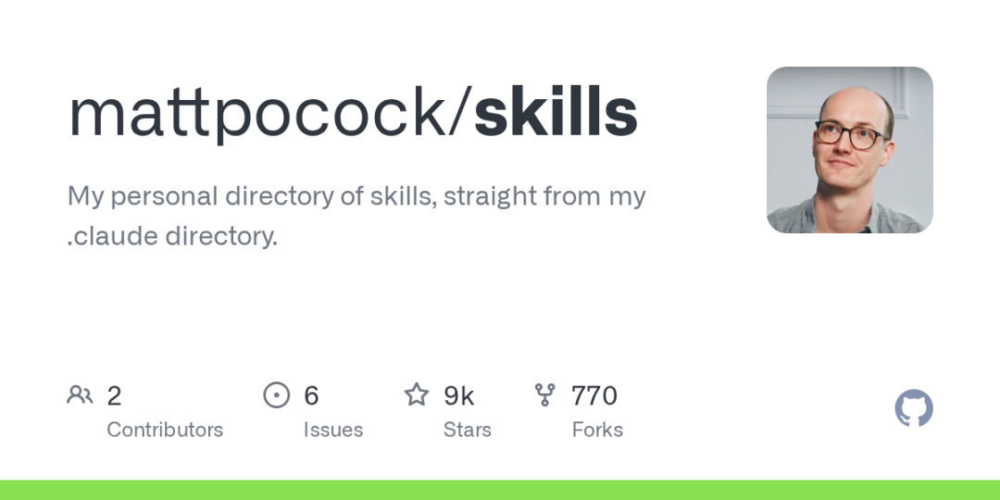
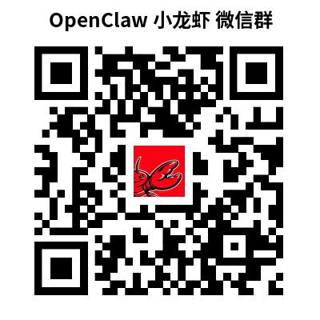

Matt Pocock 开源了他的 .claude 目录——一组精心整理的 Agent 技能，把 Claude Code 从一个被动的聊天机器人变成结构化的开发搭档，覆盖规划、TDD 和安全护栏。
你可能一直在用错方式
你不会雇一个高级工程师，然后一次只发一句话给他，没上下文，没流程，没团队知识积累。但我们大多数人对 AI 编码助手干的就是这件事。
Matt Pocock——Total TypeScript 背后的 TypeScript 教育者——刚把自己的 .claude 目录开源了。里面是一组结构化的「技能」，能把 Claude Code 从一个被动应答的聊天框变成一个有主见的开发搭档，懂你的工作流程。

我是 AI灵感闪现，使用 OpenClaw 小龙虾 让 AI 自主管理工作和生活上的问题；使用 Claude Code + BMAD AI 驱动敏捷开发框架，让 AI 自主开发和交付软件来表达想法和灵感。是 MoneyMind 省钱思维 App 和 HeartPetBond 心宠纽带 App 开发者。正在实践和分享让 AI 自主解决健康、生活、投资和等方面的问题。我尽可能让 AI 自己完成从目标到交付以及演进的闭环，以最少的人为交互与监督，让 AI 自己跑流程。我只给 AI 想法或目标，全程不陪跑，让 AI 自主运行类似 Tesla FSD 自动驾驶。
技能到底是什么？
Claude Code 支持 .claude 目录，你可以在里面定义「技能」——结构化的工作流定义，AI 被调用时会按照它执行。不是提示词，是流程。
你可以把它理解成给 AI 写的操作手册。Matt 一直在攒自己的个人收藏，现在他放到了 GitHub 上：mattpocock/skills[1]。
有意思的不是单个技能本身，而是整个集合的组织方式。
三层架构
规划层
三个技能处理大多数开发者跳过或草草了事的上游工作。
write-a-prd 不是生成一份模板文档。它会跟你做互动式访谈，扫描你的代码库，设计模块边界，最后把结果提交成 GitHub issue。AI 变成了你的产品思考搭档。
prd-to-issues 拿到 PRD 之后，按垂直切片拆成一个个独立可抓取的 GitHub issue。每个 issue 自成一体，拿起来就能做，不用去理依赖链。
grill-me 是最有意思的一个。它把交互完全反转了。不是你问 AI 问题，而是 AI 来盘问你的方案。一个接一个地问，直到决策树的每个分支都有答案。就像终端里住了一个不让你写代码的质疑型技术负责人。
开发层
工程纪律在这里体现。
tdd 跑的是真正的测试驱动开发。不是"事后补几个测试"。红灯-绿灯-重构，一次一个垂直切片。你告诉它做什么功能或修什么 bug，它来驱动循环。
triage-issue 通过遍历代码库来排查 bug，找到根因，然后提一个带 TDD 修复方案的 GitHub issue。排查和修复计划一步到位。
improve-codebase-architecture 扫描结构性改进机会。重点是加深浅层模块、提高可测试性——那种永远重要但永远不紧急、所以基本不会发生的重构工作。
工具层
两个技能负责安全网。
setup-pre-commit 配 Husky 预提交钩子，带 lint-staged、Prettier、类型检查和测试。标准工具链，但自动化配置意味着没理由跳过。
git-guardrails-claude-code 设置 Claude Code 钩子，在 AI 执行危险 git 命令之前拦截——push、reset --hard、clean。你的 AI 助手很强，但它也需要约束。
元层
write-a-skill 教 AI 创建新技能，带规范结构、渐进展示和打包资源。系统是自扩展的。技能能生技能。
完整技能清单
为什么这件事值得关注
回头看软件开发的历史。从什么都自己写，到共享代码库。从零散脚本，到包管理器。从手动部署，到 CI/CD 流水线。
每次转变的模式一样：原来手工的、个人的东西变成了结构化的、可共享的。
技能就是 AI 辅助开发领域的这次转变。一个 tdd 技能不是一段提示词，它是一整套方法论编码成的工作流定义，任何开发者都可以安装和运行。
我们正在看到 AI 行为的包管理器的早期阶段。就像 2012 年的 npm 或 2014 年的 Docker，早期构建和分享优质包的人会影响后来所有人的工作方式。
怎么开始
浏览这个集合。 去 GitHub 上看 mattpocock/skills[2]。读一读技能定义文件——即使你还没用 Claude Code，这些文件本身也有参考价值。
装一个试试。 把技能文件复制到你项目的
.claude/skills/目录。推荐从tdd或grill-me开始，它们最能体现这个范式。自己写一个。 找到你重复最多的工作流，把它编码成一个技能。用
write-a-skill来引导这个过程。分享出去。 技能经济才刚起步。那些最早建立起优质技能库的开发者社区，会比还在随意提示的团队出货更快、缺陷更少。
对比：即兴提示 vs. 技能化工作流

全网首发？第一款 GLM 4.7 + Claude Code AI 自主开发的心宠纽带 App 首次通过 App Store 审核并上架发布
智谱 GLM 4.7 模型 AI 自主开发 HeartBetBond 心宠纽带 App，从想法到提交 App Store 仅用 12 天
实战测评：用 Claude Code + BMAD + GLM-4.7 打造 HeartPetBond App (心宠纽带)
加入 AI灵感闪现 微信群
长按下图二维码进入 AI灵感闪现 微信群
长按下图二维码添加微信好友 VibeSparking 加群